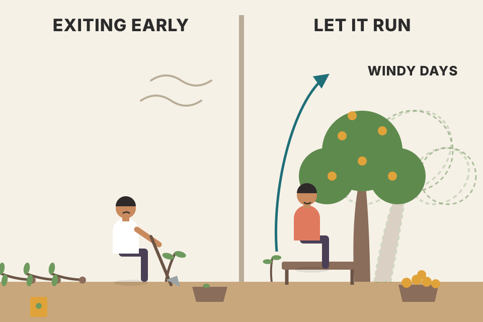
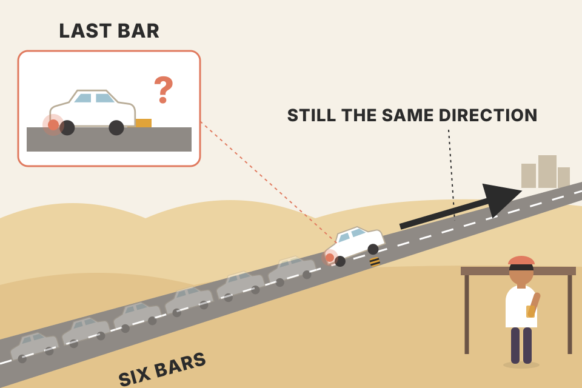
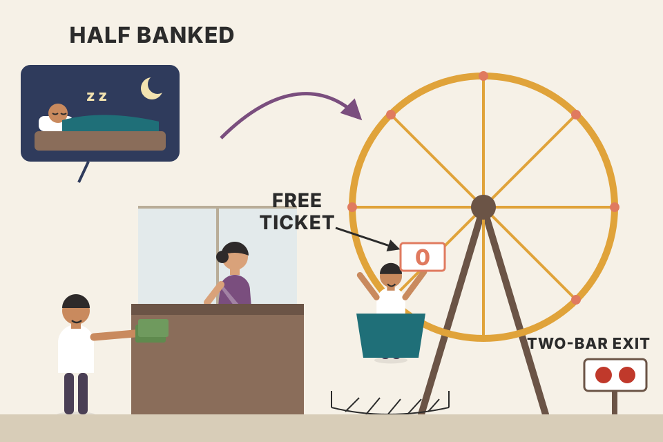
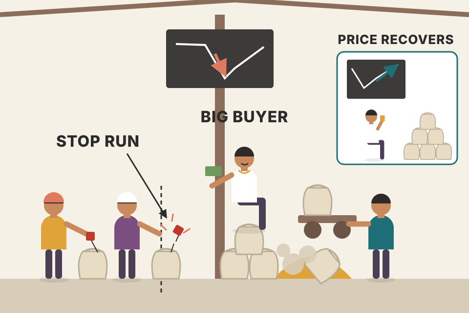

Carter's shortest chapter, about the hardest skill: holding a winner. His answer is a chart tool, the TTM trend bar, which colours each bar by what the last six bars did instead of by what the current bar did. One scary red candle can't flip it, so it keeps you in through the "shake-outs". This page covers every idea in the chapter in the book's order: why traders cut winners, why single candles cause it, what a trend bar is, his two-stage exit after a squeeze, the gold and E-mini trades, and where the indicator comes from. Every chart uses simulated prices. Where a chart recreates one of Carter's trades, the levels he gives are his and the bar-by-bar path is simulated.
The chapter is one argument in five steps. Exits, not entries, decide what you earn. Most traders exit winners too early because they react to one bar. A trend bar judges six bars at once, so it ignores a single scary bar. Carter uses it only to manage the second half of a squeeze trade. Two real trades (gold, E-mini S&P) show the difference in money.
The chapter's full title asks what the best tool is for staying in a trade and not jumping out too early. Carter warns it will be short and simple, and opens with Figure 13.1: two copies of the same hourly chart of gold futures (GC) over three days, August 14 to 17, 2011. Chart A draws ordinary candlesticks. Chart B draws TTM trend bars. Nothing else differs; the price action is identical. (The figure is blank in this PDF copy; section 05 rebuilds it with simulated prices.)
The complaint he hears most from traders is that they can't hold a winning position. They take profits far too fast, can't stop themselves, and nothing they try helps. He calls this a very bad habit and one of the main reasons traders fail to make a consistent living. The market itself lures you into thinking a quick profit is the smart move. The rest of the chapter answers one question: how does a trader hang on to a winner?

You plant a tree and dig it up every time the wind bends it, to "lock in" the growth so far. You always own saplings. Anyone can plant (entries are cheap and everywhere); the harvest comes from leaving it in the ground through the windy days.
Expectancy per trade is p × W − (1 − p) × L. Losses are fixed by your stop (here L = 1R, one unit of risk). Winners are the only part you can make bigger, and the only part you shrink when you exit early. If you keep only a fraction f of each winner's full run, expectancy becomes p × f × W − (1 − p) × L, and it turns negative below f* = (1 − p) × L ÷ (p × W). A setup can be good and still lose money in the hands of someone who cuts it short. This formula is standard arithmetic, not from the book; the numbers on the sliders are assumptions.
Notes/trading/backtest_results_summary.md: "every losing run had a win rate below its p*", with p* = (L + c)/(W + L). Cutting winners lowers W and raises p*.Many traders start out on candlestick charts, which Carter says are good for reading price action. His one complaint: candles make it easy, especially for newer traders, to get tunnel vision on the bar that is printing right now, instead of judging it against the six bars before it. A single ugly bearish engulfing candle (a red bar whose body swallows the previous green body) is enough to push most traders out of a long. The mirror case, a bullish engulfing candle, pushes shorts out.
Those candles are nerve-racking. Yet often the market carries on in the trade's direction soon after. Worse, the trader who just sold then "chases the market" to get back in, because it is obviously still going. That chase is a second bad habit, and together they form a vicious cycle. The trader was "shaken out" of a perfectly good trade by giving one bar too much weight. That is the problem the rest of the chapter fixes.

Judging a trend by its latest bar is like judging a long drive by the last ten metres. A car brakes for a speed bump; that doesn't mean it turned around. Six bars is the length of road Carter wants you to look at before deciding the car is going the other way.
A really big single drop can turn even a six-bar trend bar red for one bar. That is why Carter's exit needs two red trend bars in a row, not one. One bar is a very small sample. On a simulated market with no trend at all, about half of all bars are red, and a bearish engulfing pattern appears roughly every 8 bars (15 per 120 bars in 200 simulated runs I made for this page). Even in a steady simulated uptrend, a sizeable share of bars are red and engulfing patterns still show up every 14 bars or so. So "a scary bar appeared" carries little information on its own. Averaging over several bars shrinks the noise, which is the whole idea of a trend bar. (The counts are from my simulation, not from the book; the path in the chart above is built to continue upward after the engulfing bar, so it illustrates the story rather than proving it.)
Carter prefers TTM trend bars, which he says are similar to Heikin-Ashi bars. Before calling a bar bullish or bearish they take the prior six bars into account. In his words it takes the average price of the prior six bars and asks where that average sits inside the six bars' trading range:
The book does not publish the indicator's code, and the description is loose. It doesn't say which "price" is averaged, or whether the current bar is one of the six. The step-through below shows the literal reading next to a reading that compares the current close with the range.
Take the last six bars and draw a box from their highest high to their lowest low. Draw a line across the middle. Now ask: is the market living in the top half of the box or the bottom half? One bar that dips into the bottom half doesn't move the whole crowd's address.
Literal reading. Average the six closes, compare with the middle of the six-bar high–low range. I tested this on simulated prices and it has a flaw: in a steady trend the closes are spread evenly through the range, so their average sits almost exactly in the middle and the colour flips at random. On a strong simulated uptrend it painted only about two-thirds of bars blue and flipped colour about 31 times per 120 bars, about as often as on a market with no trend (see the table).
Readings that use the current close. Compare the current close (the newest of the six bars) with the six-bar range. Two versions: against the middle of the high–low range, or against the six-bar average of each bar's midpoint (H+L)/2. Both track the trend: about 85% blue in the same strong uptrend, with less than half the flips. The second is how the open-source pandas-ta library codes "TTM Trend" (it credits Carter's book, default length 6), so the charts in sections 04–07 use it by default.
What the platform itself says (beyond the book). thinkorswim's reference page for its built-in TTM_Trend study says a bar is bearish when the "Average Price" closes in the lower 50% of the range of the previous N bars ("comp bars"), and bullish otherwise, painted red and blue. That is as vague as the book about which average is meant, so no reading here can be called the official formula.
The table below is computed live on this page: 150 simulated markets of 120 bars for each row, six-bar window (window includes the current bar). Simulated, not evidence about real markets.
| Market (simulated) | Reading | % bars blue | Colour flips / 120 bars | "Two red in a row" signals / 120 bars |
|---|
Figure 13.1 shows a squeeze that fired long. From the squeeze chapter, such a move is treated as over once momentum fades, which happens at point 2. That is a valid exit. But Carter noticed the market often keeps climbing after that signal. His answer is a two-stage exit:

Half the position is the cash you bank so you can sleep. The other half is a free ticket: the stop at entry means the worst case is zero. A free ticket is easy to hold, and the two-bar rule tells you when the ride is truly over.
Two different exit signals for two jobs. Momentum (rate of change) peaks before price does: a move is still going up while it slows down. So "loss of momentum" fires early, near the middle of a strong run. Good for banking the first half; too early for all of it. The trend bar only flips after price has spent time in the bottom half of its recent range, so it fires late, after the turn is real. Late is fine for the second half, because the stop at entry already removed its risk.
How I coded it (my reconstruction). Momentum = close minus the close 12 bars earlier (Carter's squeeze uses a 12-period momentum oscillator, Ch.11 pdf p251), smoothed with a 4-bar EMA. "Loss of momentum" = the first bar after entry where that histogram is lower than the bar before (the "darker-coloured" histogram bars Carter describes in Ch.10 pdf p239 and the weakening signal of Ch.11 pdf p251). The entry bar, the prices around it and every other level on this chart are simulated; the book gives no entry price for this gold trade.
Long 2 GC contracts at $1,760 when the squeeze fires. GC is 100 troy ounces, so each $1 move is $100 per contract. Initial stop at $1,750.
Loss of momentum at $1,776: sell 1 contract, +$16 × 100 = +$1,600. Stop on the other contract moves to $1,760.
Case A, the trend continues and two red trend bars print at $1,790: +$30 × 100 = +$3,000, total +$4,600. Case B, the market reverses straight back: the second contract stops at entry for $0, total +$1,600. Selling everything at momentum would have made +$3,200 in both cases. The split gives up $1,600 in case B to make $1,400 more in case A, and much more in a long trend.
On Chart A of Figure 13.1, points 3 and 4 are "nasty candles": sharp, short bursts of selling that look like real sellers arriving. The instinct is to bail out before the market takes back more profit. Carter's verdict is blunt: they are fake-outs, meant to shake traders out of their positions, and the market rallied right after both. He adds a sarcastic aside that surely no one at Goldman Sachs would shake you out to buy back in cheaper.
On Chart B the same moments are marked 5 and 6, and they show up as nothing. A long trader waits for two black (red on a colour chart) bars in a row, which would mean real selling and a possible trend change on that time frame. Chart B never gives that signal, so the trader is still long at the top of the chart with gold at $1,795.00, while many new candlestick traders were shaken out at points 3 and 4.
His wider lesson: trading isn't meant to be easy; it is meant to fool most people most of the time. Nobody will make it easy to stay in. Others will try to scare you out so they can take your position at a better price. Where do the liquidity and volume come from? If you panic out too soon, they come from you. A trader who judges the current bar in the context of recent bars can ride out the small counter-trend shocks designed to shake people loose.

A big holder wants to buy more gold, cheaply. One fast push down through the spot where everyone's tight stops sit fills those stop orders, which are sell orders, so the holder buys from them. Then the push stops and price drifts back up. The candle reader sees a disaster; the six-bar view sees one bad hour inside a good three days.
Each simulated trade: 30 quiet bars, a long entry (standing in for a squeeze firing), a 60-bar move of the chosen strength with random one-bar "nasty candles" mixed in, then 40 bars drifting back. You choose whether the nasty candles are fake-outs (the drop is won back over the next few bars, as Carter says they usually are) or real selling (the drop stays). Initial stop 2 × the average bar range below entry for every rule. 400 trades, the same 400 for every rule. "Shaken out" = the exit happened on a nasty-candle bar or the bar after it.
| Exit rule | Avg P&L / trade | Winners | Avg bars held | Shaken out |
|---|
An exit rule can't create an edge; it can only keep or waste the one the entry has. Set the trend to "none" and no rule makes money on average: you are just choosing when to leave a random walk. With a trend, compare how long each rule holds and how often it was shaken out. Rules that react to one bar or a few ticks (the tight trail especially) leave early, often right on a nasty bar. Rules that wait for evidence (two trend bars) hold longer and keep more of a trend, but give back more at the end. Carter's split sits in between by design: half leaves early, half waits. Switch the nasty candles to "real selling" and the value of ignoring them shrinks, because then the scary bar was telling the truth. That switch is the real question behind Carter's claim, and the book asserts the answer from his experience rather than measuring it. The ranking of the rules depends on how I built the prices, so treat the table as a way to see the trade-offs, not as a result about gold or the E-mini.
Notes/trading/backtest_results_summary.md: your best swing systems used ATR stops (2.5 ATR on the weekly pullback), not tight trails, and the one 15-min intraday lead was a sell with a trailing stop. A test worth adding: the same entries with Carter's two-stage exit in place of the fixed 2R target.Carter calls the ES (E-mini S&P 500 future) devious, famous for shaking traders out right before the next move. On a two-minute chart a squeeze fires at 8:30 a.m. and traders go long at 1171.00. Price grinds up for about 10 minutes, then is knocked down fast from 1176.25 to 1172.75 (point 1 on Chart A). Many traders get stopped out by a trailing stop held too close. Others see the nasty candles and simply get out, probably near the low.
They still made money: 1.75 points, 7 ticks, $87.50 per contract, nothing wrong with that. But on Chart B the same selling (point 2) never became two black selling bars, so there was nothing to do but hold. Two black bars finally printed about an hour and a half later, at point 3, where a trader could exit near 1182.50: a gain of 11.50 points, 46 ticks, $575.00 per contract. That gap is the difference between being suckered out early and staying until the trade is truly over.
| Exit | Price | Points | Ticks (÷ 0.25) | $ per contract (× $50/pt) |
|---|---|---|---|---|
| Shaken out at point 1 (the book) | 1172.75 | 1172.75 − 1171.00 = 1.75 | 7 | $87.50 |
| Two black bars at point 3 (the book) | 1182.50 | 1182.50 − 1171.00 = 11.50 | 46 | $575.00 |
| Difference | 9.75 | 39 | $487.50 (6.6×) |
The drop from 1176.25 to 1172.75 is 3.5 points. A trailing stop 3 points under the high sits at 1173.25, right inside that drop. The move is sized to hit exactly the stops people place "a little under" the action.
A trailing stop measured in points ignores how much this market wiggles. Two-minute ES bars in a grind often have ranges of 1–2 points, so a 3-point trail is only a couple of bars of noise wide. The trend-bar exit measures "reversal" in the market's own units (the six-bar range), so a drop that stays in the upper half of the range doesn't count. Contract maths (beyond the book, standard CME specs): ES tick = 0.25 points = $12.50; 1 point = $50. The book's figures agree: 7 × $12.50 = $87.50, 46 × $12.50 = $575.00. The time zone isn't stated; 8:30 a.m. Central is the 9:30 a.m. Eastern US cash open (beyond the book).
Notes/trading/breakeven_move_fyers.md: an intraday round trip on a ₹4,000 NSE stock needs about a 0.15% move (small size, FYERS charges + slippage) just to break even. That fixed cost eats a far bigger share of a 7-tick-sized move than of a 46-tick-sized one.Carter uses TTM trend bars for exit management only. He usually doesn't take entry signals from them; he would rather enter on something like a squeeze or another setup from the book. As an exit tool he rates it among the better ones he has found.
He calls the indicators in the book "ideas": they can be programmed, downloaded from simplertrading.com, or found on other platforms. Figure 13.3 (blank in this PDF copy) shows the TD Ameritrade thinkorswim platform, which has some of his indicators built in. For TradeStation, eSignal, NinjaTrader, Infinity Futures and others they are downloadable from his site; some are free, some carry a fee that his firm splits with the programmers. If you can program, they are fairly easy to recreate. For more videos on TTM trend and other "bar-based" trade-management tools, he points to simplertrading.com/trendbars.
An entry tool answers "is now a good moment to start?" An exit tool answers "is the reason I'm in still true?" A trend bar is good at the second question, because it is slow by design. Slow is bad for entries (you arrive late) and good for exits (you don't leave early).
Heikin-Ashi ("average bar" in Japanese) redraws each candle from averages: HA close = (O + H + L + C) ÷ 4, HA open = (previous HA open + previous HA close) ÷ 2, HA high = max(H, HA open, HA close), HA low = min(L, HA open, HA close). Because each HA open carries half of the previous bar, it remembers the recent past and changes colour less often than plain candles. A six-bar trend bar does the same job with a fixed window instead of a running average. Both trade speed for calm. Caution: an HA candle's open and close are not real traded prices, so never use them as fill prices in a backtest.
Good entry signals are everywhere; what decides your results is how much of each move you keep. Taking profits too fast is the habit he blames for many traders failing to earn a living (section 01).
It invites tunnel vision on the current bar. The trader sells, the market often resumes, and then they chase back in at a worse price: a vicious cycle (section 02).
Take the prior six bars. If their average price is in the upper half of their trading range, paint the bar blue (bullish); in the lower half, red (bearish). In the book's grayscale, blue = light gray and red = black (section 03).
In a steady trend the six closes are spread evenly through the range, so their average sits near the middle and small noise decides the colour. Comparing the newest close with the six-bar range (its middle, or the six-bar average of (H+L)/2 as the pandas-ta port does) tracks the trend much better on simulated data. Neither the book nor thinkorswim's reference page gives the exact formula, so these are readings, not facts (section 03).
Take half off at the loss of momentum, move the stop on the rest to the entry price, and exit the rest after the trend bar turns red two bars in a row (section 04).
Momentum fades before price turns, so it is an early signal: good for banking half. The trend bar flips only after the turn is established, a late signal; it suits the half whose risk the break-even stop has already removed (section 04).
3 and 4 are nasty selling candles on Chart A; 5 and 6 are the same moments on Chart B, where no two-bar sell signal appears. The trader is still long at the top with gold at $1,795.00 (section 05).
From the traders who are scared out too soon. Their panic sells are the liquidity others use to build positions at better prices (section 05).
1.75 points = 7 ticks = $87.50; 11.50 points = 46 ticks = $575.00. ES tick 0.25 = $12.50, so $50 a point (section 06).
The shake-out fell 3.5 points from 1176.25 to 1172.75, more than the trail. The trend bar measures reversal against the market's own six-bar range, and a drop that stays in the upper half doesn't count (section 06).
No. He typically uses them for exit management and enters on the squeeze or another setup in the book (section 07).
Every exit rule loses a little. Exit rules can only keep or waste an edge the entry already has; they cannot create one. And the simulation's ranking of rules depends on how the prices were built, so it isn't evidence about real markets (section 05).